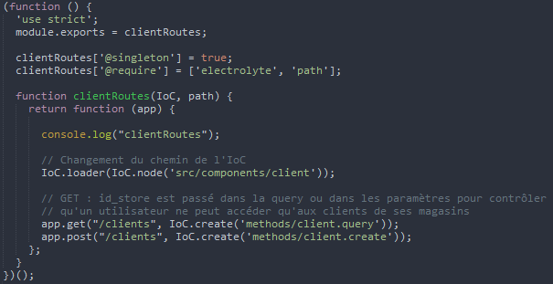
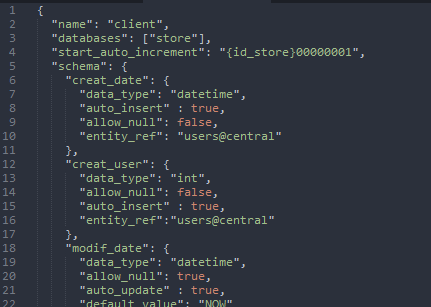
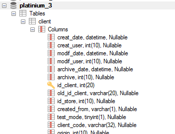
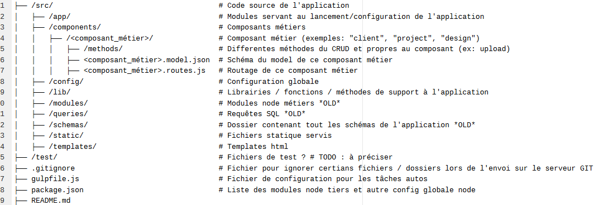

Platinium 4
Point avancement BACK-END HiNNOYA
Indicateurs
- Fiabilité
- Ponctualité
- Maintenabilité
Analyse besoin
- Gestion du code
- Sauvegarde
- versionning
- Environnement de dev :
- Installation rapide
- Outils, indicateurs
- Environnement de recette (MATT. FUZIER / TEDE)
- BDD MYSQL de référence
- Structure à jour
- Données migrées régulièrement
Travail effectué
GIT / GITLAB / GITLAB-CI
- Dépôts du code source des différents projets Platinium 4 :
- platinium_backend - OK
- platinium_sync - OK
- Gestion des utilisateurs / tickets :
- Utilisateurs créés - OK
- Les tickets sont repris au fur et à mesure de REDMINE
- Des tâches techniques sont développées
- Formation ~1h équipe BACK - OK
- Automatisation des déploiement - A FAIRE
Développement

Gestionnaire de dépendance
Choix : NPM
- npmjs.com
- Dépendances listées dans package.json
- Installer :
npm i (-D) nom_module - Re-installer :
npm i
Injecteur de dépendance (DI) + inversion de contrôle (IoC)
Choix : Electrolyte (module npm)
"Ce n'est plus l'application qui gère les appels au framework, mais ce dernier à l'application."
Environnement / Config
Système de config. revu pour construire la configuration en fonction de l'environnement
PLATINIUM_ENV=prod node server
GULP
Automatiseur de tâches

- Livereload
- Linter : erreur de syntaxe, norme de dev
- Supertest : tester requêtes HTTP
ORM
object-relational mapping
Choix : Sequelize (License MIT)
- S'abstraire de la BDD
- Synchroniser des schémas JSON avec la BDD  
Nouvelle arborescence
Tickets du FRONT
- Dépôts du code source des différents projets Platinium 4
THE END
Des questions ?